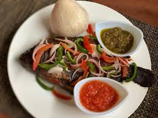
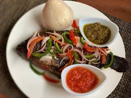

Banku
Banku is a traditional Ghanaian dish made from fermented corn and cassava dough, cooked into a smooth, slightly sour dough-like consistency, and commonly served with soup, stew, or pepper sauce with fish.
Below is the image of Banku
Banku is a traditional Ghanaian dish made from fermented corn and cassava dough, cooked into a smooth, slightly sour dough-like consistency, and commonly served with soup, stew, or pepper sauce with fish.
Below is the image of Banku
